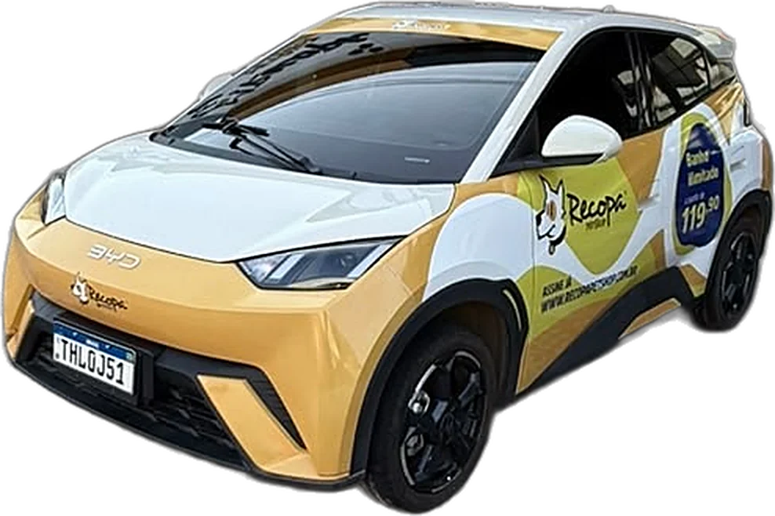

Ji-Paraná · Rondônia
Cuidado para o seu pet, a qualquer hora.
Hospital veterinário 24 horas, pet shop, banho e tosa. Tudo o que o seu pet precisa, em dois endereços na cidade.
PLANTÃO VETERINÁRIO24h


Encontre o que seu pet precisa


Transporte pet
Seu pet viaja com conforto.
Cabine climatizada para deixar o trajeto mais tranquilo e confortável para o seu animal.
E como o carro é 100% elétrico, cada viagem acontece sem emissão de poluentes. Cuidar do seu pet também é cuidar do planeta.

Em breve
Aplicativo Recopa
O acesso ao aplicativo ficará disponível aqui após o lançamento.